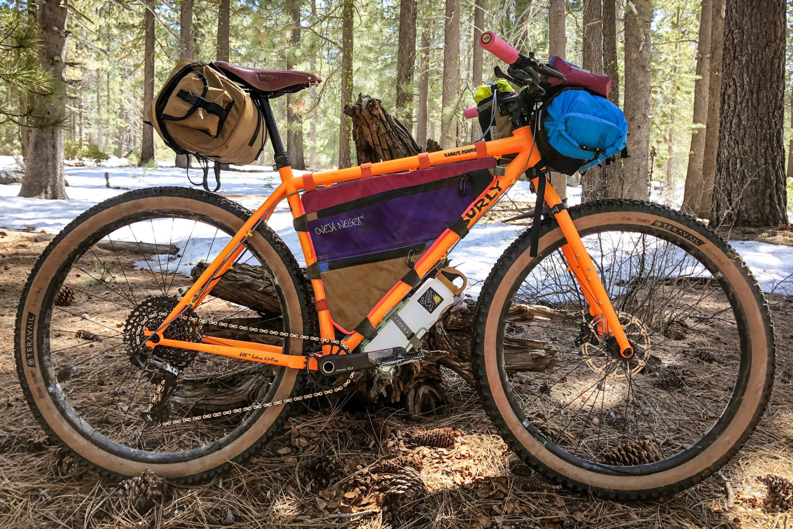
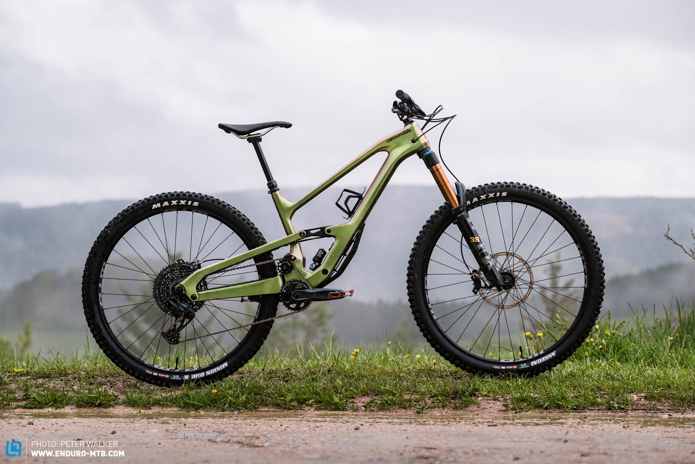
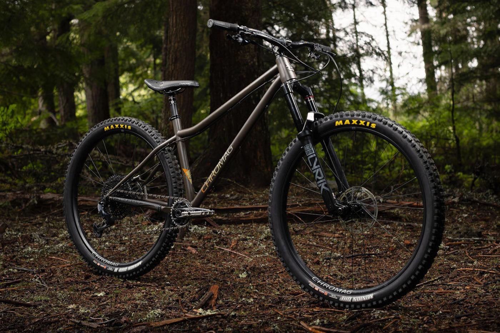

Gravel

Surly karate Monkey:
In my eyes the ideal gravel bike for exploring
Vermont is the karate monkey. While there are
certainly lighter and more aggressive options
for gravel riding, there are few as durable or
as dynamic as the karate monkey. With a circular
steel tube frame, plenty of frame mounts and the
option of running a 130mm fork, the karate monkey
is a gravel beast that has no problem taking on the
mud and ruts you will find on VT's fourth class roads.
The karate mokey doubles as a pretty decent trail bike as well.
When you arent going on gravel adventures it can certainly
handle some of the more built out trail systems in Vermont.
Enduro/Downhill

Cannondale Jekyll: When it comes
to riding downhill or Enduro in
Vermont, there will be allot of
climbing involved. There are definitely
a select group of lift-service park
trails that would require a full DH
bike, but oftentimes you will have
to earn your turns, so to speak. That
being said, the Cannondale jekyll
will be able to handle just about
any DH trail you throw it's way. With
~170mm of travel, a lightweight
frame and high pivot geometry, the
Jekyll will eat up the climbs all day
while still giving you a 'cushy' ride
going back down.
The downside of the Jekyll is its price point. With
the framset coming in at $3725, there are definetly cheaper (aliminum
counterparts on the market).
Trail

Chromag rootdown The
rootdown is a choice trail bike for Vermont.
When I am riding singltrack in VT I love to
go for longer 'tour' style rides that connect
multpile trail systems and rolling feilds. The
hardtail frame miantains maximum peddling efficiecny
while the slack geometry lets you stay agressive on
your descents. Bike is like a reverse mullet, buisness
in the back, party in the front; You can run a 160mm or
even a 170mm for on this frame. Dont let the heafty steel
frame fool you, with 29in rims this Bike
likes to roll fast and has no problem handing some of the
'oldschool' trails you'll run into on an adventure.